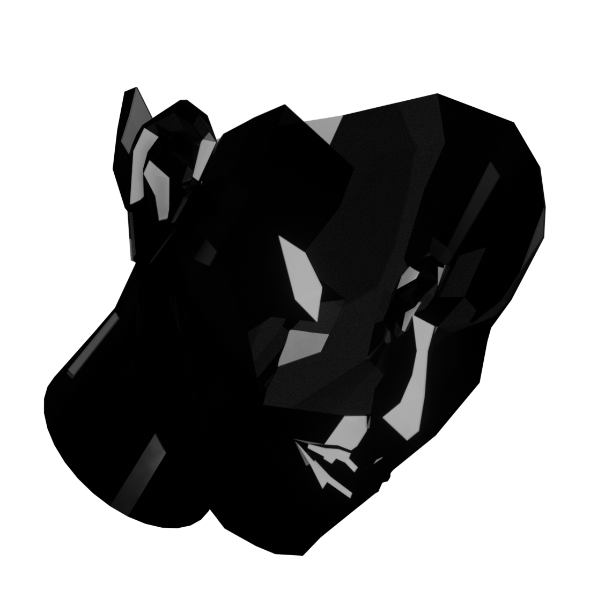
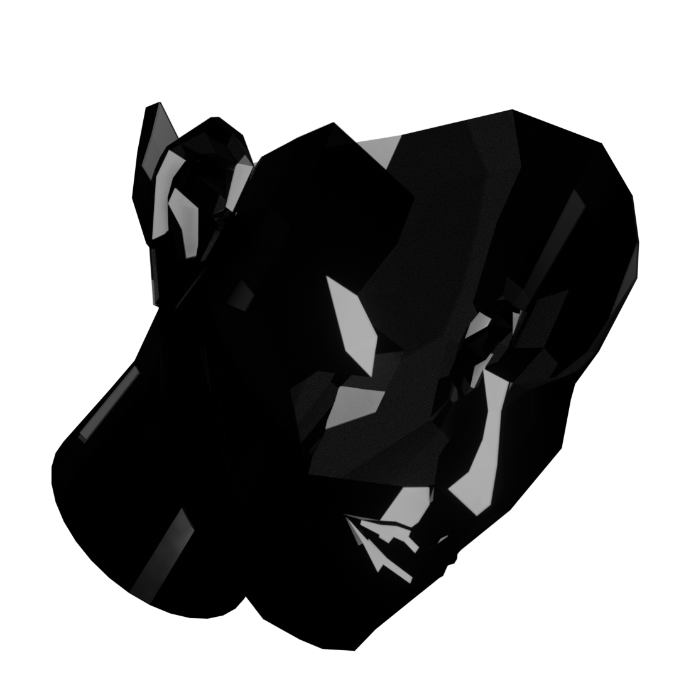

3D Paraphrase
In this project I designed a 3D model and animations of Denis Freitas' illustration. The focus of this project was to define the differences between 2D and 3D illustrations. The main difference I see is that a 3D model can be turned around easily, but a 2D illustration would require the artist to create a new picture of all the different angles.